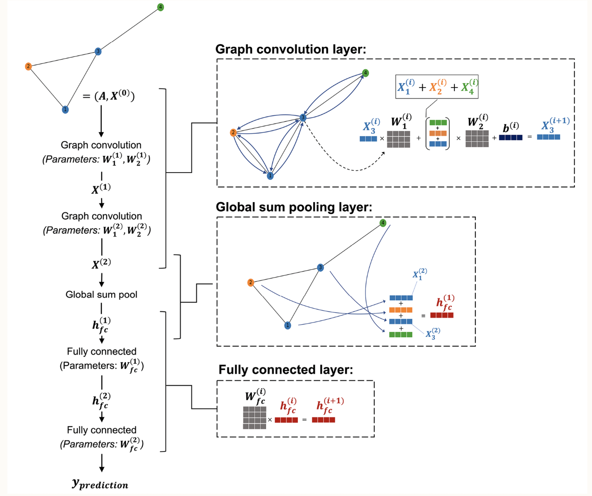
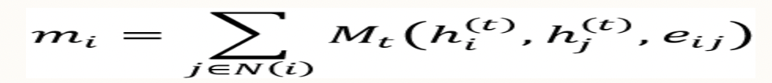

Related Work
Historically, neural networks in drug discovery used the fixed chemical properties of
molecules as feature input into neural networks. These networks could then predict
the efficacy/activity of a suggested compound given its chemical properties.
In 2020, Collins and colleagues [1]
were able to utilize graph convolutions to produce trainable molecular features for use in their neural networks.
These trainable features were then fed into a feed-forward neural network to predict the binary outcome; if the compund
would act as an antibiotic towards E. coli. This new utilization of graph neural networks to train molecular features led to
the discovery of a novel antibiotic, one that was structurally unique to other antibiotics.
The use of neural networks to predict novel treatments of disease is widespread, and includes many areas of medicine and disease. Alzheimer's Disease is a
well known disease that impacts the lives of many people. The amyloid peptides play a large role in the pathogenesis of the disease,
largely related to their dysfunction [2]. Although the Disease impacts such a large population,
little is known about the underlying biological mechanism as a whole, and thus treatments are limited.
Proposal
The proposed project for this course involves the reproduction and alteration of Collins work with antibiotics to predict
novel compounds which may be effective in the treatment of Alzheimer's Disease, via interaction with the amyloid peptide. This would
include the use of the open source code in the Chemprop library
[3]. The open source
code would give us a solid foundation to build on this project and allow us to experiment with and make modifications to the model.
Pubchem is a well-known source for chemical
and drug-related information. One element of the database is the experimental data of biological compounds and their effect on biological
targets of interest. In our proposal, we aim to use the experimental data from Pubchem on which compounds display bioactivity against the Amyloid
peptide implicated in Alzheimer's Disease. This bioassay database provides experimental data for nearly 200,000 compounds and their activity /
impact on the Amyloid peptide
[4]. By using this data, we can incorporate a network to predict the binary classification outcome comparable to Collins
used above, however aimed to predict the bioactivity against the Amyloid peptide.
Milestone 2
Stokes and colleagues made a large impact in the drug discovery field using graph neural
networks to identify novel antibiotics inhibiting the growth of E.coli. This was a big change from the standard
use of deep learning in drug discovery, which typically used concrete molecular properties as inputs to their models.
In their paper, they used a message passing deep neural network to translate a graph representation of the molecules into
a 1-dimensional vector. Along with additional optimization techniques, Stokes took advantage of the graph neural networks'
ability to learn new feature vectors to nominate multiple compounds displaying antibiotic resistant activity.
The image below is a visualization of a graph neural network architecture, similar to what Stokes and colleagues may have used.

Source: Machine Learning with PyTorch and Scikit-Learn (2022)
[5]
Conceptual Review
In a graph neural network, a molecule can be easily represented as a graph where each node represent an atom type and each edge represent bond type.
Therefore each molecule is represented using three matrices:
- Adjacency Matrix : Each row and column represent an atom. It marks a cell as 1 if there is an edge between two nodes.
- Atom feature matrix : Each row represents an atom and column represent atom features like atom type, number of neutrons.
- Edge feature matrix : Each row represents an atom and column represent bond type. For example single and double bond.
A large reason we are using the graph neural network architecture is to overcome the limitations of the standard feed-forward neural network.
For this project, our task is to predict whether a molecule inhibits levels of a protein implicated in Alzheimer's Disease.
If we were to use a standard feed-forward neural network and pass the atom feature and edge feature directly to the neural network, the network will not
use all of the relevent information (such as the connection between atoms). To overcome this, graph neural network helps to create node embedding
which retains information about atom features as well as connected atom features.
The three sub-structures in the image above is described below:
Graph Convolution Layer
The graph convolutional layer uses the below function to convert atom features into node embedding.

Here h is a fuction representing the state of an atom i at timestamp t. The Message function takes as input state of an atom, the state of neighboring atoms and its atom features.
The overall function further applies three fuctions to the input
- Transform : It is matrix multiplication of adjacency matrix and edge matrix.
- Aggregate : It is normalization of transformed matrix.
- Update : In this the aggregated input and atom feature itself is passed through neural network to create node embedding.
Global Sum Pooling Layer
The node embedding created in GNN is not useful becuase each node have different size. So, in this layer, mean/sum of all the columns are taken and a new embedding is created with equal size by adding zero padding
Fully Connected Layer
The node embedding created in global sum pooling layer is now passed through a fully connected layer, that predicts whether a molecule is a drug.
Graph Neural Network Implementation
Hyperparameters
- Input size : There are 193158 molecules and divided into 80% training data, 10% test data and 10% validation data.
- Weight Decay : Weight decay as 0. It can vary from 0.001 to 0.01.
- Dropout : It is initialized as 0.
- Node embedding size: The node embedding features are initialized as 128 and can increase upto 256.
- Message passing layer: There are two message passing layers. It can vary from 2-5.
- Network/Architecture size: There are two graph convolution layers and two fully connected layers. Both graph and full connected layers can vary from 2-5 layers
Current Progress
- Downloaded the bioassay experiment data as well as compound information from the PubChem Database.
- Performed exploratory data analysis to visualize patterns in the data overall, as well as separated by target label.
- Used DeepChem to convert each molecule into a graph representation.
- Used the DeepChem Graph Convolutional Model to predict whether or not a compound would inhibit levels of the protein.
As of now, we have only tested out the DeepChem in-house models, and will perform further testing in the future. Below are two plots that
were found from initial analysis.
Essentially, our model has performed fairly well considering the little tuning we have done to the models. When passing our validation data into
model we have achieved a recall score of 78%, precision score of 71%, as well as an accuracy of 71%.
Next Steps
- Model building : The current model implemented in our project is the out-of-the-box model provided by DeepChem. We would like to use our current results to
build off of this model and create custom layers and parameters.
- Experiment and performance comparison(In progress): We will use support vector machine as an alternative model. It takes Morgan fingerprint as an input \
and performs classification. We will then do comparison of the performance of neural network model and SVM. If time permits we will try to build random forest model and compare its performance with feed-forward neural network model
References
[1] Stokes, J.M., Yang, K..., Collins, J. (2020).
A Deep Learning Approach to Antibiotic Discovery, Cell, 180:4, 688-702.
[2] Bloom GS. Amyloid-β and tau: the trigger and bullet in Alzheimer disease pathogenesis. JAMA Neurol.
2014 Apr;71(4):505-8. doi: 10.1001/jamaneurol.2013.5847. PMID: 24493463.
[3] Chemprop 2020
[4] National Center for Biotechnology Information (2022). PubChem Bioassay Record for AID 1276, Source: Columbia University
Molecular Screening Center. Retrieved September 28, 2022 from https://pubchem.ncbi.nlm.nih.gov/bioassay/1276.
[5] Raschka, S., Liu, Y., Mirjalili, V., & Dzhulgakov, D. (2022). Machine learning with pytorch and scikit-learn develop machine learning and deep learning models with python. Packt Publishing.
Team Members
Afsar Equebal and Hendrik Ombach.